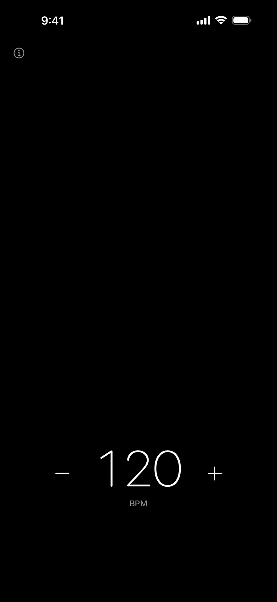
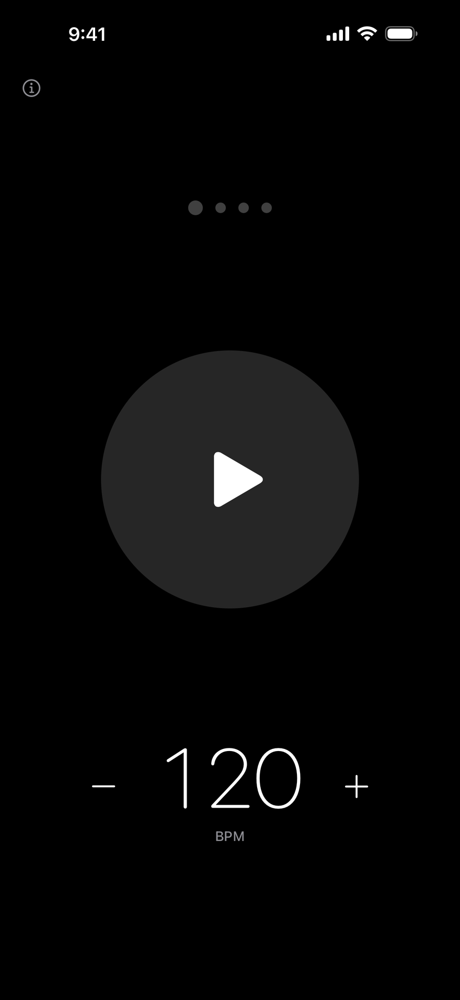
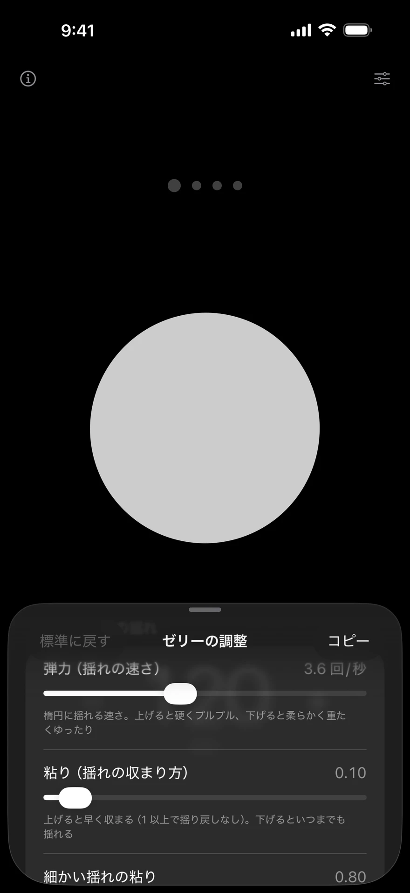

Метроном с пульсом
Сентябрь 2026
Обзор
Круг в центре экрана пульсирует в тот же момент и с той же силой, что и щелчок. Я создал метроном для iPhone без рекламы, учётных записей и экрана настроек.

Я сделал его для собственных занятий на тенор-саксофоне. Открыл — и можно сразу начинать; даже если звук плохо слышен, доли остаются видны. Всё, от замысла и дизайна до реализации на SwiftUI и синтеза щелчков, я сделал сам.
Управление — коснуться того, что хочешь изменить
На экране только точки долей, круг и число темпа. Ни меню, ни пояснений: меняешь сам объект, касаясь его.

- ⓘ
- Открывает страницу поддержки.
- Точки
- Касание добавляет долю (1–7). Проведите пальцем, чтобы увеличить или уменьшить их число.
- Круг
- Касание запускает или останавливает. Удерживайте, затем отбивайте ритм композиции, чтобы задать темп.
- Числа
- Перетаскивайте для ускорения или замедления. Медленное движение даёт точную настройку. −/+ меняет значение на единицу.
Пульс — тот же момент, та же сила
Круг увеличивается, когда звук достигает уха, а не когда отправляется на выход. Задержка Bluetooth-наушников около 0.1–0.3 секунды компенсируется по данным о выходной задержке, которые сообщает iOS. Размер расширения пропорционален громкости щелчка: на первой доле звук выше и громче, а круг увеличивается заметно сильнее.
Моменты долей определяет аудиопоток с точностью до отсчёта. Расчёт не накапливает погрешность: даже через час непрерывного воспроизведения отклонение остаётся в пределах 0.5 отсчёта.
Темп касаниями — тишина, пока отбиваешь ритм
При долгом нажатии круг начинает дрожать, как желе. Касайтесь его в ритме композиции или темпа в голове: в месте касания появляется вмятина, круг колышется и восстанавливается. Вибрация передаёт темп обратно вам.

Во время касаний звук намеренно отсутствует. Немедленный звуковой отклик пришёл бы через Bluetooth с задержкой и наложился на щелчки метронома. Когда касания прекращаются, щелчки в заданном темпе начинаются почти неслышно и за шесть секунд достигают обычной громкости.
Звук — выбрать на слух высоту, не теряющуюся за саксофоном
Щелчки синтезируются из синусоид, без аудиофайлов. Я сделал страницу для сравнения и провёл три сравнительных прослушивания через динамик iPhone, играя на тенор-саксофоне. Выбрал 1875 Hz и 1250 Hz — в 1.25 раза выше исходных частот: выше самой сильной области саксофона и ниже области, склонной звучать пронзительно.
Более высокие, длинные звуки и варианты с добавленными обертонами были слышны лучше. И всё же я выбрал в пределах, сохраняющих мягкий, нейтральный характер электронного звука.
Убрать лишнее — что я не включил
Ничего, что заставляет колебаться при выборе. Я проверял каждый пункт: может ли приложение обойтись без него, — и убирал.
- Реклама, отслеживание и аккаунты
- Решено с самого начала. Приложение само не инициирует сетевые обращения.
- Экран настроек
- Всё происходит на одном экране.
- Выбор тембров
- Двух звуков, для акцентированных и неакцентированных долей, достаточно. Варианты порождают сомнения.
- Ползунок громкости
- Достаточно кнопок громкости устройства.
- Светлая тема
- Только один чёрный экран.
- Восемь долей и больше
- 12/8 считаем в четыре доли, 9/8 — в три.
- Деление долей (восьмые, триоли, шестнадцатые)
- Не обязательно для работы приложения. Первый кандидат на будущее дополнение.
- Ввод темпа числом
- Достаточно −/+ и перетаскивания.
Реализовано на SwiftUI без сторонних библиотек. Работает на iPhone с iOS 17 и новее. Английское название — No Ads Simplest Metronome. Готовлю публикацию в App Store (сентябрь 2026). Полная инструкция и политика конфиденциальности размещены на странице поддержки (на английском).